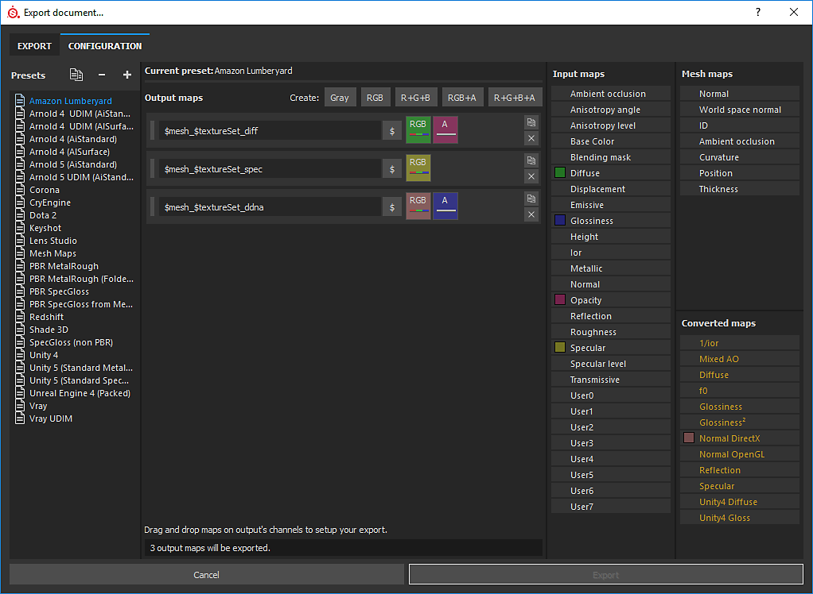
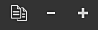
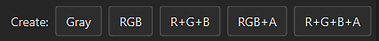
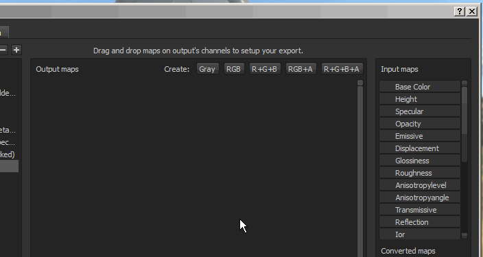
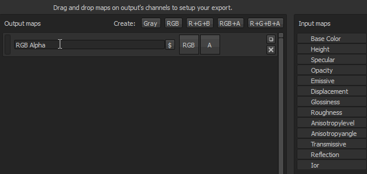
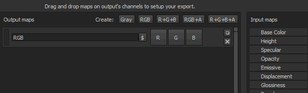

This page explain how to create and modify custom Output templates. Output templates control the naming and configuration of exported textures. Creating a custom Output template gives you the power to configure your exports to perfectly match your workflow.
The configuration tab of the export window is divided into three main parts:

Output templates are saved on the disk as individual files and can be shared with any other user of Substance 3D Painter.
You can find the local files for custom templates you have created in the assets/export-presets folder of your Substance 3D Painter files.
When a template is used to export textures, the template file is automatically included in the project file in subsequent saves.
This allows the sharing and/or moving of a project to another computer while maintaining the templates for exporting the textures.
Only the last used preset is saved in the project. However if Substance 3D Painter detects a preset that has the same name, the preset inside the project the will be marked as "Outdated" in the list.
On the top of the preset list, there are three buttons:

You can also double-click on a template or right-click > rename to change the name of a template.
Once a template is selected, it is possible to add new output maps using the dedicated buttons, which are available at the top of the middle section of the window.


Once a map has been created, it is possible to name it and then drag and drop input maps into one of the available channel slots.
Once an input map has been dropped into the output maps section, a menu will open asking which type of content is to be loaded in that slot.
The options range from RGB and individual channels, to the Alpha and the Grayscale conversion of the input.
Each time an input map is dragged and dropped, a random color will be generated. This provides a visual cue for the channels and the corresponding input map that is loaded.
The button also indicates what is loaded into the slot:

Some flags are available to automatically generate the name of the texture during the export process.
Example : cymourai.fbx with a texture set named "MaterialBase"
Folders are automatically converted as groups in case the export format is set as PSD (Photoshop) file format.

It is possible to leave some channels (of the output map) totally empty. In this case case a default color will be assigned.
If a slot refers to a channel that is not present in the Texture set during the export, a default color will also be generated.
This color changes depending on the channel which gives the best neutral value.
Example : If missing, the height channel will be generated with a default gray value.
There are different types of maps: